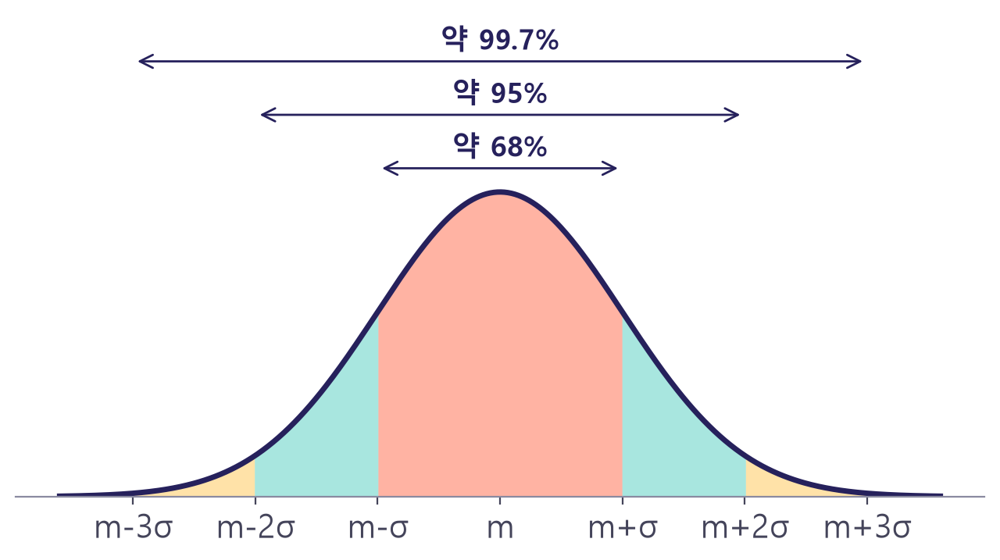

연속확률변수와 정규분포
측정값이 종 모양으로 모이는 이유
확률과 통계 · 공과대학 1학년
이미지: Google Flow로 생성
학습목표
8주차연속확률변수와 확률밀도함수의 뜻 이해
정규분포 곡선의 성질과 모양 해석
표준화와 표준정규분포표를 이용한 확률 계산
연속확률변수
셀 수 없이 많은 값을 갖는 확률변수
이산확률변수와 연속확률변수
8주차이산확률변수
- 하나하나 셀 수 있는 값
- 예: 하루 고장 건수, 불량품 개수
- 확률 = 막대의 높이
연속확률변수
- 어떤 구간의 모든 실수 값
- 예: 저항값, 부품 수명, 측정 오차
- 확률 = 곡선 아래의 넓이
계급을 잘게 나누면 곡선
8주차


저항 2000개의 측정값 히스토그램: 계급 폭을 줄일수록 매끄러운 곡선에 가까워짐
확률밀도함수
8주차연속확률변수 X의 확률을 그래프 아래의 넓이로 나타내는 함수
조건: f(x) ≥ 0, 그래프와 x축 사이 전체 넓이 = 1
연속확률변수의 성질
8주차- 모든 x에서 f(x) ≥ 0
- 곡선과 x축 사이 전체 넓이 = 1
- 한 점에서의 확률 P(X = a) = 0
- P(a ≤ X ≤ b) = P(a < X < b): 등호 유무와 무관
균등한 대기 시간
8주차- 구하는 확률 = 직사각형의 넓이
- 가로: 5 − 2 = 3, 세로: 1/10
- 넓이 = 3 × 1/10
정규분포
자연과 공학에서 가장 자주 만나는 분포

과녁의 화살: 가운데로 모이는 오차
- 중심 근처의 화살 다수, 크게 벗어난 화살 소수
- 측정 오차도 같은 모양: 작은 오차 다수, 큰 오차 소수
- 이 모양을 나타내는 분포가 정규분포
정규분포
8주차평균 m, 표준편차 σ인 종 모양의 연속확률분포
핵심: 공식 암기보다 그래프 모양과 m, σ의 역할
정규분포 곡선의 성질
8주차- 직선 x = m에 대하여 대칭
- x = m에서 최댓값
- m이 커지면 곡선이 오른쪽으로 평행이동
- σ가 커지면 낮고 넓게 퍼진 모양
68–95–99.7 규칙
8주차
평균에서 표준편차의 1배, 2배, 3배 안에 들어갈 확률
저항값의 공차 해석
8주차저항값 X ~ N(100, 22), 단위 Ω: 공차 ±2σ면 약 5%가 불합격
표준화
모든 정규분포를 하나의 표로 계산하기
표준화
8주차평균을 빼고 표준편차로 나누어 N(0, 1)로 바꾸는 과정
X ~ N(m, σ2) 이면 Z ~ N(0, 1): 표준정규분포

표준정규분포표 읽기
8주차- 표의 값: P(0 ≤ Z ≤ z), 0부터 z까지의 넓이
- 대칭 이용: P(−z ≤ Z ≤ 0) = P(0 ≤ Z ≤ z)
- 오른쪽 꼬리: P(Z ≥ z) = 0.5 − P(0 ≤ Z ≤ z)
| z | P(0 ≤ Z ≤ z) |
|---|---|
| 0.5 | 0.1915 |
| 1.0 | 0.3413 |
| 1.5 | 0.4332 |
| 2.0 | 0.4772 |
| 2.5 | 0.4938 |
| 3.0 | 0.4987 |
저항값의 합격 비율
8주차- 표준화: Z = (X − 100)/2
- 98 → Z = −1, 104 → Z = 2
- P(−1 ≤ Z ≤ 2) = P(0 ≤ Z ≤ 1) + P(0 ≤ Z ≤ 2)
- = 0.3413 + 0.4772
측정 오차가 클 확률
8주차- |X| > 1: X < −1 또는 X > 1
- 표준화: ±1 → Z = ±1/0.5 = ±2
- P(|Z| > 2) = 2 × (0.5 − 0.4772)
확인 퀴즈
8주차연속확률변수 X에 대하여 P(X = 3)의 값
→ 0 (한 점의 넓이 = 0)
X ~ N(50, 42)일 때 X = 58을 표준화한 값
→ Z = (58 − 50)/4 = 2
Z ~ N(0, 1)에서 P(Z ≥ 1)의 값 (P(0 ≤ Z ≤ 1) = 0.3413)
→ 0.5 − 0.3413 = 0.1587
8주차 정리
연속확률변수
확률 = 확률밀도함수 그래프 아래 넓이, P(X = a) = 0
정규분포 N(m, σ2)
x = m에 대칭인 종 모양, σ가 클수록 넓게 퍼짐
표준화
Z = (X − m)/σ로 바꾼 뒤 표준정규분포표 이용
다음 주: 모집단과 표본, 표본평균의 분포
이미지 출처
8주차| 자료 | 작가 | 라이선스 |
|---|---|---|
| 주차 표지 이미지 | Google Flow로 생성 | AI 생성 |
| Archery Arrows in Paper Target | Jack Soley | CC BY-SA 4.0 |
사진: Wikimedia Commons의 자유 라이선스 이미지 · 그래프: 직접 계산해 그림